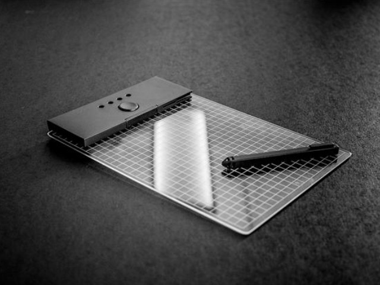

「Trickey」を使うとペンタブ環境がこんなにすっきり
知ってる人は知ってるけど知らない人はとことん知らないペンタブ。PCでイラストを描く際にマウスの代わりに使うデバイスです。実際に紙に描いているのに近い感覚で描くことができるのでペイントツールではとても重宝するのですが、実はこのペンタブ、場合によってはちょっと困ったことが発生します。
こちらがペンタブを使ってイラスト描くときの様子です。SAIというソフトを使用しています。

多くのペイントツールでは描いた線の取り消しにCtrl+Zを使用します。他にも便利なキーボードショートカットがたくさんありイラストを描く際にキーボードは必須なのですが、ご覧のとおりディスプレイ、キーボード、ペンタブと並べているためかなり机が狭くなってしまいます。というかペンタブが机からはみ出ちゃってます。
しかもこの状態ではディスプレイとペンタブの間にキーボードがあるため左手を伸ばした不自然な体勢を強いられてしまいます。これじゃあいくら絵がうまくてもちゃんと描けません。(嘘です。)
そこで今回はペイントツールで利用するショートカットを集めたボードを作成してみました。

TrickeyはCtrlやShift、Altなどもサポートしているため、ペイントツールに限らずあらゆるキーボードショートカットを実現することができます。今回はCtrl+Zの他にSAIでは領域選択という機能が当てられているCtrl+Tを選びましたが、もちろん好きなショートカットを置くことができます。
実際にこのボードを使ってみます。

かなりすっきりしました。
ペンタブを使っているときにキーボードをどこに置くか悩んでいる人も多いはず。 Trickeyなら最小限の大きさで必要な分だけキーを置くことができます。

・関連記事
自由にカスタマイズ可能なキーボード「Trickey」- MECHAZINE
「Trickey」を使って自分だけのゲーミングキーボードを作ってみた - MECHAZINE